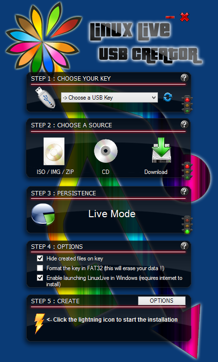

Description de Linux
Linux ou GNU/Linux est une famille de systèmes d'exploitation open source de type Unix fondé sur le noyau Linux, créé en 1991 par Linus Torvalds. De nombreuses distributions Linux ont depuis vu le jour et constituent un important vecteur de popularisation du mouvement du logiciel libre.
Si à l'origine, Linux a été développé pour les ordinateurs compatibles PC, il n'a jamais équipé qu'une très faible part des ordinateurs personnels. Mais le noyau Linux, accompagné ou non des logiciels GNU, est également utilisé par d'autres types de systèmes informatiques, notamment les serveurs, téléphones portables, systèmes embarqués ou encore superordinateurs. Le système d'exploitation pour téléphones portables Android qui utilise le noyau Linux mais pas GNU, équipe aujourd'hui 85 % des tablettes tactiles et smartphones.
Installation de Linux
Ce qui faut avant commencer
Un ordinateur sous windows
Une clé usb 4 Go
Dans un premier temps, il va falloir télécharger lillyusbcreator depuis leur site officiel.
Télécharger lillyusbcreatorUne fois télécharger et installer lors du lancement du logiciel, vous allez voir cette image.
Du coup soit on télécharge le Linux directement via lillyusb creator.
Soit on peut télécharger directement sur le site officiel du Linux et ajoute l'image (.iso) du Linux dans lillyusbcreator.
Télécharger Telecharger Debian 11Une fois image (.iso) du Linux sélectionner il faut ensuite sélectionner la clé usb de 4 Go que vous avez brancher.
Et pour finir vous avez juste a lancer installation du Linux dans la cle usb.
Il vous proposera de formater la clé et je vous conseille de formater la clé sois par Windows ou par lillyusbcreator.
Et pour finir juste a redémarrer le pc et boot sur la clé de démarrage de Linux pour lancer l'installation du Linux choisie.